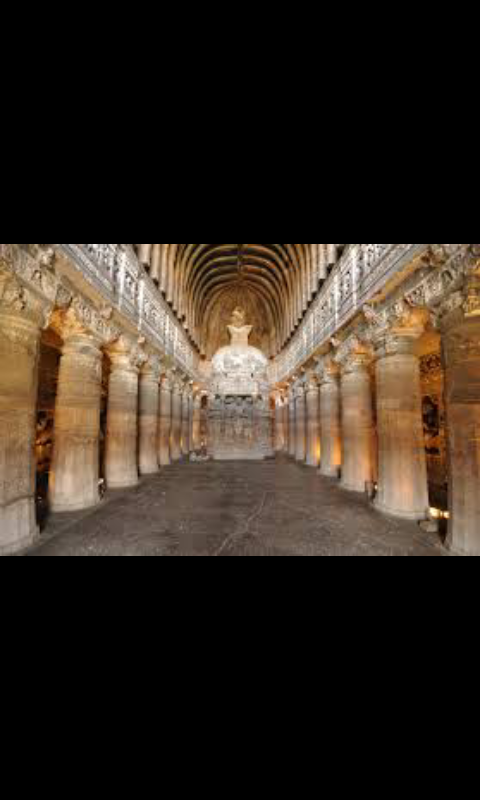

Ajanta Caves, Maharashtra
The Ajanta Caves are a series of 29 Buddhist cave templesin Ajanta, India, some of which
date from the 2nd century BC. Encompassing both Theravada and Mahayana Buddhist traditions,
the Ajanta caves preserve some of the best masterpieces of Buddhist art in India.
Many visitors explore the Ajanta Caves in conjunction with the nearby Ellora Caves.
History of the Ajanta Caves
The Ajanta Caves were carved in the 2nd century BC out of a horseshoe-shaped cliff along
the Waghora River. They were used by Buddhist monks as prayer halls (chaityagrihas)
and monasteries (viharas) for about nine centuries, then abruptly abandoned.
They fell into oblivion until they were rediscovered in 1819.

Homepage
Next